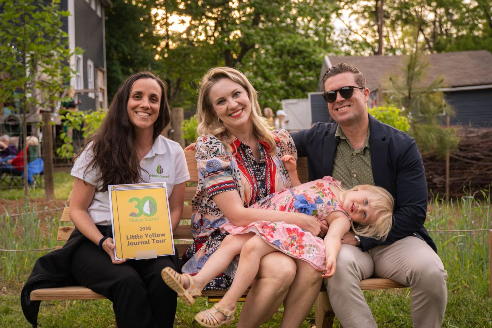

You know what will make a difference in your Sacred Place and community. Firesoul™ Network Enrichment & Enhancement Grants are here to help make those ideas possible—from programs that bring people together to improvements that help your Sacred Place grow and thrive. These grants are rooted in trust: you bring the vision, and we provide flexible funding and support to help bring it to life.
Firesoul Network Grants can support both the experiences that bring your Sacred Place to life and the physical care that keeps it thriving.
As a Firesoul, you know your Sacred Place and your community. These grants are intentionally community-driven and flexible, giving you room to respond to the needs, ideas, and opportunities you see firsthand. Have an idea that doesn't fit neatly into a category? Bring it to us. We're happy to brainstorm with you before you apply.
Host at your Sacred Place. Programs and events should take place in or very near your Sacred Place. In the case of weather, activities may be moved indoors.
Keep it free and welcoming. Programs and events supported by Nature Sacred grant funding must be free to the public and designed so everyone feels welcome and that they belong.
Plan ahead. You don't need a complicated budget, but your application should include a simple, informed budget showing how you expect to use the funding for your program, event, or enhancement.
Bring us your ideas. Not sure if something fits? Ask us! We're happy to brainstorm with you before you apply.
Have an idea for your Sacred Place? Tell us what you'd like to make possible and how Firesoul Network funding could help.
Received an Enrichment or Enhancement Grant? Tell us what happened, what you learned, and what the funding helped make possible at your Sacred Place.
Complete a Grant Report